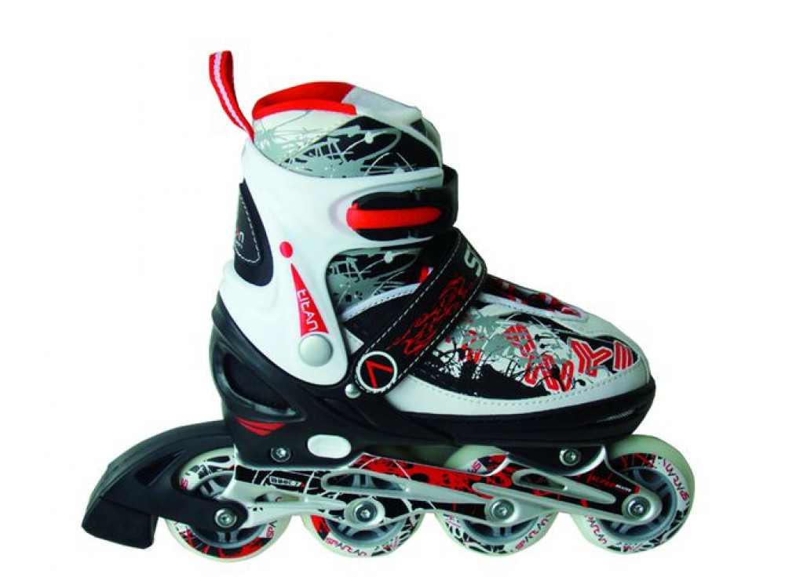

Riedučiai Internetu pigiau Žema kaina | b-a.eu
- Riedučiai
Riedučiai Flying Eagle F3 F110 3X3 Riedučiai Flying Eagle F3 F110 3X3. Vieni aukščiausios klasės riedučių rinkoje, Flying Eagle F3110 Stingray, šie riedučiai pasižymi tokia pat aukšta technologija, kaip 4x80mm riedučiai, tačiau suteiks jum stabilesnį ir greitesnį riedėjimą.Techninės specifikacijos: - Patogus, kietas bato kiautas, apsaugos jūsų pėda nuo sumušimų ... - Riedučiai | Senukai.lt
SEBA HIGH LIGHT BLACK riedučiai . 306,00 € 360,00 € -15%. Išparduota. Išparduota. Pridėti į pageidavimus . Išparduota . FR Skates FRW 80 riedučiai . 199,00 € Išparduota. Pridėti į pageidavimus . Stabdis riedučiams FR Skates/SEBA FRBRK-4W. 17,90 € - Riedučiai NIJDAM | skorpionas.lt
Riedučiai vaikams ar riedučiai suaugusiems, nesvarbu, kam norite išrinkti, svarbiausia, atkreipti dėmesį į šiuos kelis pagrindinius kriterijus. Ratukai – kuo ratukai didesni ir kietesni, tuo riedučiai bus greitesni, kuo mažesni ir minkštesni – tuo lėtesni, tačiau manevringesni ir lengviau valdomi. - Paspirtukai, riedlentės, riedučiai ir kita | Senukai.lt
-20% Riedučiai retro Nijdam 52RF, 37 dydis 54,87 € 68,59 € -20% Reguliuojamo dydžio riedučiai NIJDAM 52SJ, 30-33 dydis 43,67 € 54,59 € Apranga ir avalynė. Apranga ir avalynė Sportinė apranga. Plaukimo kostiumai. Maudymukai ... - Riedučiai (37) - WinnerSport
Welcome to Decathlon, explore a huge range of Freestyle riedučiai, Riedučiai, Quad tipo riedučiai equipment and gear. Enjoy 365 days return policy and 2 - Riedučiai - Decathlon
2rieduciai.lt: K2 riedučiai, riedučių dalys (ratukai, guoliai). Pas mus platus pasirinkimas, geros kainos su didele nuolaida už tikrai aukštos kokybės riedučius. Prekiaujame naujais ir mažai naudotais Prekiaujame ir kitų gamintojų (SEBA, Rollerblade, Powerslide, SALOMON, FILA) riedučiais. Prekyba naujais ir naudotais riedučiais, riedučių dalimis ir aksesuarais. - 2rieduciai.lt - 2rieduciai - Išparduotuvė 2 RIEDUČIAI.LT
Riedučiai taip pat yra puiki priemonė pasportuoti ir patirti puikių emocijų. Važinėdami riedlente ir riedučiais būtinai naudokite riešų, kelių ir alkūnių apsaugas. Paspirtukas yra saugesnė ir praktiškesnė transporto priemonė, nes jo valdymui nereikia jokių specialių įgūdžių. - Riedučiai suaugusiems Vilniuje | - Slides.lt
Riedučiai Fila PRIMO AIR FLOW 127.20 € Siūlyti savo kainą Siūloma kaina € *Jūsų vardas *Jūsų el. paštas *Telefono numeris * būtina užpildyti Siūlyti. 159.00 € Daugiau-20 % . Riedučiai Fila Plume 143.20 ... - Riedučiai - AivaShop.lt
Riedučiai su minkštu batu Ši riedučių rušis išskirtinė tuo, kad stabilumą kojoms suteikia ne išorinė medžiaga, o vidinė. Šie batai pagaminti iš ekologinės odos arba kitos tvirtos medžiagos. Šie riedučiai irgi turi paklausą, nes yra lengvi, gerai vedinasi ir atrodo stilingai. Riedučiai hibridinės konstrukcijos - Riedučiai - Streetboards
Riedučiai tiek suaugusiems, tiek vaikams turi labai daug privalumų. Nurodome pačius pagrindinius, kurie turėtų Jus paskatinti įvertinti riedučių teikiamą naudą. Žinoma, bene pats didžiausias privalumas yra tai, kad riedučiai padeda labai treniruoti kojas. Visi, kurie nori lieknų, tačiau tuo pačiu stangrių kojų – kasdien ...

Kalba (language)
Pristatymas (shipping to)
Belarus Germany Denmark Estonia Spain France United Kingdom Ireland Italy Lietuva Latvia Norway Poland Russia Sweden Ukraine KuponaiPrekių katalogas
Baldai ir interjeras Statybinės medžiagos Buitinė technika Namai ir buitis Elektronika namams Metalai Įranga ir įrenginiai Santechnika Prekės vaikams Elektros prekės Laisvalaikio ir sporto prekės Prekės civiliams, kariams, medžiotojams Zoo prekės gyvūnams Medicina, sveikata Sodo daržo prekės Sekso prekės Kvepalai ir kosmetika Apranga, avalynė ir aksesuarai Dovanos, suvenyrai, pramogos Auto-Moto Išmanūs namai Žiūrėti visą prekių katalogą Prisijunkitearba registruokitės Apie b-a.eu Kontaktai D.U.K Kaip pirkti
EUR /
/
Pristatymas: Lietuva
Kalba (language) Lietuvių Latviešu English Pусский Pristatymas (shipping to) Belarus Germany Denmark Estonia Spain France United Kingdom Ireland Italy Lietuva Latvia Norway Poland Russia Sweden Ukraine Prekių krepšelis: 0 Parfumerija Moterims Kvepalai moterims Chanel Christian Dior Versace Hugo Boss Guerlain Lacoste Lancome Gucci Escada Giorgio Armani Serge Lutens Lanvin Moschino Chloe Lady Gaga Mexx Revlon Kenzo Calvin Klein Kosmetikos rinkiniai Kosmetika veidui Makiažo pagrindas Veido pudra Skaistalai Maskuojamos priemonės Kosmetika akims Tušai Šešėliai Akių pieštukai ir kontūrai Kosmetika lūpoms Lūpų dažai Blizgesiai Pieštukai lūpoms Kosmetika nagams Negyvosios jūros produktai Vyrams Kvepalai vyrams Chanel Christian Dior Versace Hugo Boss Lacoste Lancome Gucci Giorgio Armani Lanvin Moschino Mexx Kenzo Calvin Klein Visi kvepalai vyrams Skutimosi priemonės Losjonai, balzamai Skutimosi želė Skutimosi putos Higienos priemonės Šampūnai Dušo želė Dezodorantai/antiperspirantai Burnos higiena Muilas Kojų priežiūrai Naujas Kremai nuo saulės Dekoratyvinė kosmetika Kosmetikos rinkiniai Makeup Trading Elizabeth Arden Estee Lauder Clinique Visi rinkiniai Akių šešėliai Christian Dior Artdeco Dermacol Rimmel London Visi šešėliai akims Akių pieštukai ir kontūrai Lancome Christian Dior Rimmel London Visi akių pieštukai Akių tušai Chanel Lancome Christian Dior L´Oreal Paris Clinique Maybelline Rimmel London Visi akių tušai Makiažo pagrindas Revlon Lancome BOURJOIS Paris Christian Dior Visi makiažo pagrindai Veido pudra Clinique Lancome Visos pudros Skaistalai veidui Rimmel London Dermacol Lūpų dažai Christian Dior Max Factor Visi lūpų dažai Lūpų pieštukai Lūpų blizgesiai Dolce & Gabbana Lancome Visi blizgesiai lūpoms Maskuojamosios priemonės veidui Kosmetika nagams Dermacol Sally Hansen Priežiūra ir higiena Veido priežiūra Kremai veidui Kaukės ir serumai Paakių priežiūra Veido valikliai Asmens higiena Dezodorantai ir antiperspirantai Naujas Depiliacija Burnos higiena Intymi higiena Muilas Vonios druskos, aliejai Plaukų priežiūra Šampūnai Plaukų stiprikliai Plaukų modeliavimui Plaukų kaukės Kondicionieriai ir balzamai Plaukų dažai Viso kūno priežiūra Kūno kremai, losjonai Kūną stangrinančios priemonės Kojų priežiūra Rankų priežiūra Kūno šveitikliai Kremai ir losijonai nuo saulės nudegimų, netolygau įdegio Aromatiniai eteriniai aliejai Negyvosios jūros produktai Negyvoji jūra kūnui Kūno losjonai, kremai, sviestai Dušo želė, šveitikliai Papildomos, spec. priemonės Negyvoji jūra plaukams Plaukų balzamai, kaukės Negyvosios jūros šampūnai Negyvoji jūra veidui Paakių zonai Veido kremai, kaukės Veido valymui Papildomos negyvosios jūros priemonės Baldai Svetainės baldai Sekcijos Sofos, sofos-lovos Minkšti kampai Foteliai ir pufai Svetainės komodos Svetainės staliukai TV staliukai Lentynos Miegamojo baldai Miegamojo lovos Čiužiniai Miegamojo spintos Miegamojo baldų kolekcijos Virtuvės baldai Virtuviniai komplektai Virtuvinės spintelės Virtuviniai stalai Virtuviniai stalviršiai Virtuvės baldų priedai Vonios baldai Vonios baldų kolekcijos Vonios spintelės Sisteminiai baldai Šiuolaikiniai sisteminiai baldai Klasikiniai sisteminiai baldai Jaunuolio baldai Jaunuolio baldų kolekcijos Jaunuolio baldų komplektai Jaunuolio kėdės Valgomojo baldai Valgomojo stalai Valgomojo kėdės Prieškambario baldai Prieškambario kolekcijos Prieškambario komplektai Prieškambario spintos Batų dėžės Kabyklos Dekoratyviniai aksesuarai Paveikslai Baldai vaikams Vaikiškos lovos Spintos vaikams Stalai vaikams Kėdės vaikams Lentynos vaikams Kabyklos vaikams Lauko baldai Lauko stalai Lauko kėdės Įvairūs lauko baldai Lauko baldų komplektai Medžio masyvo baldai Mediniai virtuvės baldai Mediniai miegamojo baldai Mediniai valgomojo baldai Mediniai prieškambario baldai Mediniai staliukai Kiti mediniai baldai Biuro baldai Biuro baldų kolekcijos Biuro kėdės Baro ir restorano baldai Baro, restorano stalai Baro, restorano kėdės Statyboms Statybiniai blokeliai ir plytos Akyto betono blokeliai Silikatiniai blokeliai Silikatinės plytos Keramzitiniai blokeliai Keraminiai blokeliai Keraminės plytos Klinkerinės plytos Betono blokeliai Pamatiniai blokeliai Statybinės sąramos Stogų ir sienų dangos Beasbestinis šiferis Bituminės čerpelės Bituminiai lakštai PVC lakštai Prilydomos dangos Betoninės čerpės Keraminės čerpės Profiluota skarda Cedral apkala Sandwich plokštės Komplektavimo detalės Statybiniai mišiniai Cementas Mūro mišiniai Statybiniai klijai Gipsas Glaistas Išlyginamieji mišiniai Tinko mišiniai Cheminiai priedai Šilumos izoliacija Akmens vata Stiklo mineralinė vata Putų polistirenas Ekonominis polistirolas Termoizoliacinės plokštės Šilumos izoliacinis tinkas Kita šilumos izoliacija Statybinės plokštės Gipso kartonas (GKP) Orientuotų skiedrų plokštės (OSB) Fanera Cemento drožlių plokštės (CDP) Medžio drožlių plokštės (MDP) Medžio plaušo plokštės (MPP) Tvoros Tvorų segmentai Stulpai tvoroms Vartai Tvorų aksesuarai Tinklai tvoroms Skaldytų blokelių tvoros Betoninės tvoros Skardinės tvoros Kaminų sistemos Schiedel kaminai Fibo kaminai Kerapor kaminai Aplinkos tvarkymo elementai Grindinio trinkelės Klinkerio trinkelės Šaligatvio plytelės Kelio ir vejos bordiūrai Šulinių žiedai Dekoratyviniai gaminiai Apdailos medžiagos Apdailos plytelės Grindų apdailos medžiagos Sienų apdailos medžiagos Lubų apdailos medžiagos Apdailos sujungimo profiliai Dažai ir glaistai Emulsiniai dažai Lakai Akriliniai dažai Aliejiniai dažai Grindų dažai Emaliniai dažai Aerozoliniai dažai Dažymo įrankiai Gruntai Glaistai Rūdžių surišėjai, modifikatoriai Medžio tvirtinimo elementai Vinys Medsraigčiai, smeigės Kabliai (pusiaukilpiniai, įsukami) ir kilpos Sraigtai Din 7981, cinkuoti Sraigtai Din 571, cinkuoti Metalo tvirtinimo elementai Varžtai Veržlės Poveržlės Sraigtai Kniedės Vielokaiščiai Skiedikliai ir valikliai Acetonas Nefrazas Nitroskiedikliai Terpentinas Vaitspiritas Žibalas Skiedinio dėmių valikliai Specialios paskirties valikliai Tinklai, lynai, vielos, grandinės Statybiniai tinklai Vieliniai lynai, vielos Grandinės Plieninių lynų ir grandinių tvirtinimo elementai Tvirtinimo elementai Metalo profiliai Kaiščiai GKP tvirtinimo elementai Šilumos izoliacinių medžiagų tvirtinimo elementai Stogų, sienų tvirtinimo elementai Langai, durys, palangės, laiptai Stoglangiai Vidaus ir lauko durys Laiptai Durų stogeliai Palangės Plėvelės stogams ir sienoms Antikondensacinė plėvelė Difuzinė plėvelė Garo izoliacinė plėvelė Priešvėjinė plėvelė Apsauginės medžiagos Statybinė mediena Hidroizoliacija, hermetikai, impregnantai Poliuretaninės putos Pistoletai hermetikams Putų pistoletų valikliai Hidroizoliacinės medžiagos Impregnantai Silikoniniai hermetikai Akriliniai hermetikai Ugniai atsparūs hermetikai Bituminis siūlių užpilas Vandens suvedimo sistemos Lietvamzdžiai ir latakai Paviršinio vandens surinkimas Sodui, daržui Sėklos Daržovių, vaisių Gėlių Prieskonių Šiltnamiai Sodo įrankiai Grąžtai Grėbliai Įrankiai miškui Įrankiai vaikams Karučiai Kastuvai Kirviai Peiliai Pjūklai Šakės Sekatoriai Sodo žirklės Krūmapjovės ir trimeriai Lapų pūstuvai Mini traktoriai Moto blokai Pjūklai (benzininiai, elektriniai) Šakų, malkų smulkintuvai Ūkinės prekės Kopėčios Šluotos Kitos Žoliapjovės, vėjapjovės Fontanai Prekybinės palapinės Sniego valymo technika Sniego kastuvai Sniego stumdytuvai Sniego valytuvai Laisvalaikis Prekės sportui Prekės turizmui Vandens gaiva Prekės žvejybai Muzikos instrumentai Motociklininkui Rimtesniam modeliavimui Vaikams Namams Jai ir Jam Išpardavimai Akcijos Prekių katalogas Mano meniu Daugiau +370 699 62969 8:00-17:00 d.d. info@b-a.eu Laisvalaikio ir sporto prekės Sporto prekės Dviračiai, riedučiai, paspirtukai Riedučiai Išvalyti visus filtrus Dydis Nenurodyta (143) 26 - 29 (6) 28 - 32 (1) 29 - 34 (2) 29 - 32 (2) 30 - 33 (1) 31 - 34 (1) 33-36 ir 37-40 (1) 33 - 36 (11) 34 - 37 (4) M/35 (1) 35 - 38 (2) 35- 38 (1) M/36 (2) 36 - 39 (1) 36 (1) 37 - 40 (6) 37 (4) L/38 (1) 38 (4) 38 - 41 (3) 39 (3) 39 - 42 (7) 40 - 40.5 (1) 40 - 43 (8) 40 (6) 41 (5) 42 (7) 42.5 (2) 43 (3) 43.5 (3) 44 (6) 44.5 (3) 45 (2) 46 (1) 47 (2) 48 (2) Guolių tipas Nenurodyta (214) ABEC 3 (1) ABEC 5 Carbon (1) ABEC 5 (9) ILQ 7 (4) ABEC7 Chrome (3) ABEC 7 (26) 608z (1) Amžiaus kategorija Vaikams/suaugusiems (5) Vaikams (1) Suaugusiems (39) Nenurodyta (214) Maksimalus vartotojo svoris Nenurodyta (250) 36 (1) 39-42 (1) 60 kg. (1) 60 kg (1) 100 kg (4) 120 kg. (1) Gamintojas Taip pat siūlome: Dviračiai Dviračių dalys ir aksesuarai Dviračių ir riedučių apsaugos Dviratininko apranga Paspirtukai, balansiniai dviračiai Riedlentės Riedučių ir riedlenčių atsarginės dalys Riedžiai (Segway)Riedučiai internetu pigiau
29-34 Reguliuojamo dydžio riedučiai K2 Marlee Pro
Kaina: 105.00 €Riedučiai - pačiūžos 2in1 WORKER Nolan
Kaina: 56.72 €44.5 Fiksuoto dydžio riedučiai K2 Trio 110
Kaina: 246.10 €Fiksuoto dydžio riedučiai Fila Legacy Comp Lady - 40
Kaina: 106.95 €Riedučių rinkinys WORKER Polly
Kaina: 47.77 €RiedučiaI WORKER Jules
Kaina: 36.18 € ATPIGORiedučiai - pačiūžos Spokey QUATTRO 4IN1, juoda
Kaina: 43.21 € 57.62 €Riedučiai ROCES MANIA 550060 01
Kaina: 51.16 €Riedučiai ROCES CHUCK CLASSIC ROLLER 550030 02/05
Kaina: 51.16 €Riedučiai ROCES CHUCK CLASSIC ROLLER 550030 01
Kaina: 51.16 €Riedučiai - pačiūžos Action PW-126B-102 2in1
Kaina: 37.43 €Riedučiai - pačiūžos Spokey DUE 2IN1, juoda
Kaina: 45.86 €39-42 Riedučiai - pačiūžos reguliuojamo dydžio Worker Pinkola 2in1
Kaina: 77.50 €33-36 Riedučiai - pačiūžos reguliuojamo dydžio Worker Reviro 2v1
Kaina: 71.26 €Riedučiai ROCES ARGON 400765 02
Kaina: 134.73 €35-38 Riedučiai - pačiūžos reguliuojamo dydžio Worker Tifero 2in1
Kaina: 81.25 €31-34 Riedučiai - pačiūžos reguliuojamo dydžio Worker Tifero 2in1
Kaina: 81.25 €36-39 Reguliuojamo dydžio riedučiai Worker Haasiko Black
Kaina: 77.50 € Buvęs 1 2 3 4 5 6 7 ... 15 Kitas Riedučiai - šiuo metu Jūs esate šioje grupėje. Riedučius galite rinktis iš skirtingų spalvų, dydžių, gamintojų ir kita. Su riedučiais galėsite smagiai praleisti laisvalaikį. Juos galite įsigyti internetinėje parduotuvėje b-a.eu, vyksta akcijos Kaina perkant internetu šioje prekių grupėje riedučiai tai puikus pasirinkimas kiekvienam klientui. Grupėje dviračiai, riedučiai, paspirtukai visada yra galimybė įsigyti prekes pigiau. Nepatingėkite pasiteirauti geresnės kainos ir mūsų vadybininkai esant galimybei pasiūlys Jums pigiau riedučiai grupės prekes. Lankomiausios šioje grupėje dviračiai, riedučiai, paspirtukai prekės yra šios - paspirtukas elektrinis pro-02; paspirtukas manta mes1201h; 22 mini riedlentė, penny lenta, plastikas, abec-11 guoliai worker doomy; balansinis dviratis meteor police; riedučiai legacy pro 80 lady f19 39; elektrinė riedlentė meteor 35869; riedlentė accessories wonder women super hero; riedlentė longboard meteor mėlyna/rožinė/sidabrinė; elektrinis riedis, 10 colių ratai windrunner fun a1 art carbon; triukinis paspirtukas su guoliais abec-9 street surfing bandit reward;Pristatymas visoje Lietuvoje - Vilniuje, Kaune, Klaipėdoje, Šiauliuose, Panevėžyje, Alytuje, Marijampolėje, Mažeikiuose, Jonavoje, Utenoje, Kėdainiuose, Telšiuose, Visagine, Tauragėje, Ukmergėje, Plungėje, Kretingoje, Šilutėje, Radviliškyje, Palangoje, Gargžduose, Druskininkuose, Rokiškyje, Biržuose, Elektrėnuose, Garliavoje, Kuršėnuose, Jurbarke, Vilkaviškyje, Raseiniuose, Anykščiuose, Lentvaryje, Grigiškėse, Naujojoje Akmenėje, Prienuose, Joniškyje, Kelmėje, Varėnoje, Kaišiadoryje, Pasvalyje, Kupiškyje, Zarasuose.
Riedučiai: sveikatai, grožiui ir pramogai!
Kai šiais laikais vis garsiau kalbama apie sporto naudą – daugelis renkasi kur kas smagesnius fizinio aktyvumo būdus. Vienas iš tokių yra riedučiai , kurie padeda geriau jaustis, sumažinti apimtis, žinoma, padalinti savo kūno linijas. B-a.eu riedučiai – puikus pasirinkimas tiems, kurie nori be didelių pastangų, priešingai – su malonumu, pasiekti puikų rezultatą. Nebūtina aktyviai sportuoti , kad pavyktų jaustis kur kas geriau. Net ir labai smagi pramoga gali virsti naudingu sportu. Svarbiausia – apsauga , reguliarus aktyvumas bei pozityvumas. Tuomet riedučiai tiek vyrams, tiek moterims, tiek vaikams taps šeimą arba draugus vienijanti pramoga!
Kodėl verta važiuoti su riedučiai?
B-a.eu riedučiai – kiekvienam pagal poreikius. Siūlomas labai platus skirtingų prekių pasirinkimas. Juolab, katalogas nuolatos pildomas, kad būtų galima pasiūlyti vis inovatyvesnių ir vis kitokių žmonių poreikius tenkinančius riedučius . Užsisakius internetu kaina mažesnė nei daugelyje prekybos vietų, o akcija leis įsigyti dar pigiau.
Riedučiai tiek suaugusiems, tiek vaikams turi labai daug privalumų. Nurodome pačius pagrindinius, kurie turėtų Jus paskatinti įvertinti riedučių teikiamą naudą.
Žinoma, bene pats didžiausias privalumas yra tai, kad riedučiai padeda labai treniruoti kojas . Visi, kurie nori lieknų, tačiau tuo pačiu stangrių kojų – kasdien turėtų važinėtis riedučiais. Dažniausiai jau po poros savaičių pamatomi akivaizdūs rezultatai. Svarbiausia, kad minant riedučiais labai intensyviai stiprinama vidinė šlaunų pusė. Būtent šlaunys daugeliui moterų ir kelia diskomfortą, nepasitenkinimą savo kūnu. Aktyviai treniruodamasi galite sumažinti apimtis nepakenkiant kūnui. Juolab, važiuojant riedučiais net 50 % mažiau dėvisi kelių sąnarai nei kad bėgant. Žinoma, papildomas privalumas, kurį turi bet koks kitoks sportas, yra tai, kad važiuodami riedučiais galite sudeginti labai daug kalorijų . Jeigu valandą važiuosite riedučiais, net ir gana neintensyviai – galite sudeginti iki 600 kCal. Palyginimui, bėgdami sudeginsite iki 400 kCal, o važiuodami su dviračiu apie 450 kCal. Akivaizdu, kad riedučiai šiuo atveju yra pats geriausias pasirinkimas, kadangi papildomai ši priemonė padeda pagerinti medžiagų apykaitą ir numesti svorio, padalinti kūno linijas. Bet koks fizinis aktyvumas stiprina širdį bei kraujagysles , tačiau ypač dažnai akcentuojama, kad važiuojant riedučiais galima pasiekti stebėtinai gerus rezultatus. Riedučiai veikia taip pat kaip Cardio treniruotes. Svarbiausia reguliuoti tempą: tai intensyviau, tai ne taip intensyviai. Pagerina nuotaiką . Galiausiai, važinėjimasis riedučiais padeda panaikinti liūdnas mintis, tuo pačiu padeda geriau jaustis, galiausiai, dažnas tikina, kad su aktyviu važinėjimu tuo pačiu dingo ir nemigos problema.Riedučiai – labai universali transporto priemonė, kadangi jais važiuoti patogu, o tuo pačiu, kaip papildomas privalumas, pavyksta pagerinti savo išvaizdą bei sveikatą. Nuostabu, kai be jokių didelių pastangų galima taip puikiai jaustis!
Raskime geriausius riedučius B-a.eu
Kiekvieno asmens poreikiai skirtingi, tad norėdami būti tikri, kad visus juos patenkinsime – siūlome labai plačią riedučių pasiūlą. Kad pavyktų susirasti ko Jums reikia greičiau – rekomenduojame susisiekti su mūsų konsultantais, kurie pagal Jūsų poreikius pateiks rekomendacijas bei padės rasti tai, kas tinka labiausiai. Tuo pačiu nurodome kelis esminius kriterijus, kurie padės rasti tai, ko ieškote.
Ieškodami riedučių turite įvertinti, kad jų dydis nulemia ir patogumą. Taip pat reikia pasižiūrėti, kokio kietumo rateliai . Dažniausiai su minkštesniais važiuoti patogiau. Plačiau pasidomėkite gamintoju ir internete skaitykite kitų žmonių atsiliepimus apie konkretaus gamintojo pasiūlymus. Skiriasi ir užsegimas . Vienu atveju – plastmasiniai segikliai, kitu – raišteliai. Stilius – daugeliui svarbus kriterijus.Pasirinkimas platus, tad skriekite vėjyje su riedučiais, kurie Jums leis patirti laisvės jausmą!
Apie mus D.U.K Garantijos ir grąžinimas Prekių pristatymas Kontaktai Partneriai Reklama Prekių istorija Sales and Export© 2010-2020 b-a.eu. Visos teisės saugomos.
Erikab-a.eu konsultantė Sveiki, turite klausimų?
Mes Jums padėsime!
Parašykite man el. paštu: info@b-a.eu × Erika
b-a.eu konsultantė Sveiki, turite klausimų?
Mes Jums padėsime!
Parašykite man laišką el. paštu: info@b-a.eu Uždaryti
